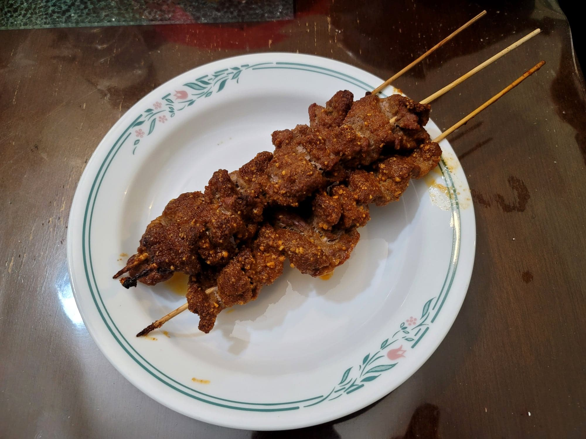

Beef Suya

Ingredients:
Suya Seasoning:
- 1/4 cup (38 g) Dry roasted peanuts, finely ground into a powder
- 1 tbsp Garlic powder
- 1 tbsp Onion powder
- 1 tbsp White pepper
- 1 tbsp Chicken bouillon powder
- 1/2 tbsp Smoked paprika
- 1/2 tbsp Cayenne pepper
- Optional: 1/2 tbsp Ground cameroon pepper OR another 1/2 tbsp Cayenne pepper
- 1 - 1 1/2 tsp Salt, or to taste
Other Ingredients:
- 2 lb Sirloin, cut into long 1/4 inch think strips against the grain
- 2 tbsp Vegetable oil + more as needed
Instructions:
- Combine the seasoning ingredients together and mix until homogenous.
- Pat the beef dry with a paper towel. Massage the 2 tbsp vegetable oil into the meat, followed by 2-3 tbsp suya seasoning. Cover and let marinate overnight.
- Preheat an oven to 450 degrees Fahrenheit. Soak bamboo skewers in water for at least 20 minutes.
- Thread the beef strips onto the skewers. Then dip both sides of the beef into the suya seasoning to coat. Place onto a foil lined and greased baking tray. Brush more oil over the beef skewers on the trays.
- Place into the preheated oven and bake for 12-15 minutes. Optionally, transfer to a broiler for the last 3 minutes of baking for a crispier beef suya. Then remove and serve hot.
- Alternatively, the beef suya can be grilled. Place the suya onto a greased grill rack and brush with oil. Cook for about 3-5 minutes per side.